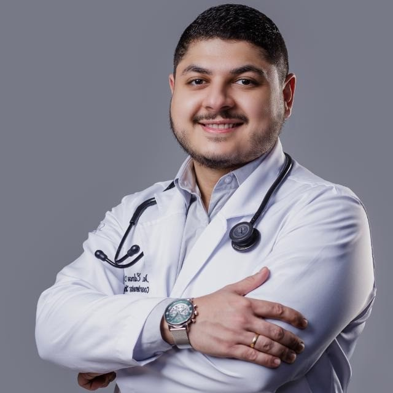

CENTRO DE SAÚDE & HOSPITAL SÃO CAMILO • CRATO - CE
Acompanhamento clínico especializado, exames diagnósticos e assistência hospitalar com dedicação e compromisso à saúde de sua família.
A Medicina Interna, também conhecida como Clínica Médica, é a especialidade que cuida do adulto como um todo. Em vez de olhar apenas para um sintoma isolado, o meu papel é entender a sua história, ouvir suas queixas com atenção e organizar o melhor caminho para a sua saúde.
Para oferecer um atendimento seguro e humano, o meu trabalho se apoia em quatro grandes pilares:
É o espaço de cuidar da sua saúde no dia a dia, com calma e sem pressa. No consultório, ajudo a investigar sintomas que ainda não têm resposta, controlo doenças crônicas como pressão alta e diabetes, reviso receitas de quem toma muitos remédios e organizo exames de prevenção. Quando o paciente tem dificuldade de locomoção, está se recuperando de uma internação ou precisa de um cuidado mais próximo no conforto do lar, também realizo consultas domiciliares. Levar o atendimento até a sua casa permite avaliar a rotina de perto, orientar a família com tranquilidade e garantir o mesmo rigor técnico do consultório no ambiente em que o paciente se sente mais seguro.
Quando um problema de saúde exige internação, o paciente e a família precisam de ainda mais segurança. Atuo diretamente dentro do hospital acompanhando casos mais delicados, ajustando tratamentos diariamente e conversando de forma transparente com os familiares. Meu foco é garantir que o paciente receba o melhor cuidado possível até o momento de voltar para casa com segurança.
A boa medicina não depende apenas de um médico, mas de uma equipe bem organizada. No Hospital e Maternidade São Francisco de Assis (Hospital São Camilo), no Crato, atuo como Diretor Clínico e Coordenador de Clínica Médica e Emergência. Trabalhar na gestão me permite melhorar os processos do hospital, cuidar da qualidade do atendimento e garantir que toda a equipe trabalhe unida pela segurança de quem precisa de ajuda.
Ensinar é a melhor forma de continuar aprendendo e de transformar o futuro da saúde. Sou Mestre em Educação Médica, professor de Cuidados Paliativos no curso de Medicina da Universidade Regional do Cariri (URCA) e Coordenador do Programa de Residência Médica em Clínica Médica no Hospital São Camilo. Além disso, sigo em especialização em Cuidados Paliativos pelo Hospital Israelita Albert Einstein. Essa rotina de ensino e estudo constante garante que o atendimento que você recebe esteja sempre atualizado com o que há de melhor na ciência.
Estrutura ambulatorial para consultas e diagnósticos e retaguarda hospitalar na cidade do Crato, Ceará.
Localizado no Crato, Ceará, oferecendo uma infraestrutura completa para atendimento médico, odontológico e de diagnóstico.
Rua Carolino Sucupira, nº 307 • Bairro Pimenta
Crato - CE • CEP: 63105-010
Hospital e Maternidade São Francisco de Assis
Referência no Cariri para internações, procedimentos cirúrgicos, assistência de maternidade e retaguarda hospitalar contínua.
Rua Cel. Antônio Luíz, 1028 • Pimenta
Crato - CE • CEP: 63105-000
Para dúvidas, agendamentos e orientações de atendimento no Crato, entre em contato pelo canal principal.